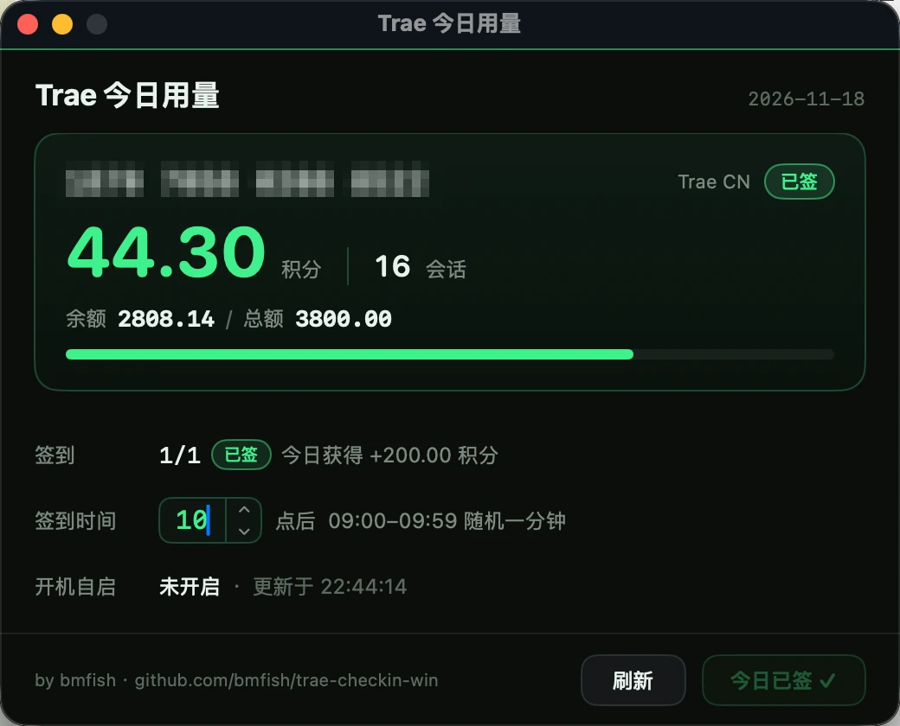

自动发现账号Accounts, discovered
读取本机 Trae 客户端已登录的账号，Trae CN 与 Trae CN 2 各自识别，不用手动粘贴 sessionid。
Reads the accounts already signed in to your Trae clients, including Trae CN and Trae CN 2 — no sessionid to paste.
ZERO CONFIG常驻菜单栏或托盘，自动发现本机 Trae 账号，在起始时间后的随机一分钟签到领积分。今日消耗、会话和余额，抬眼就能看到。
Lives in your menu bar or tray, finds your local Trae accounts and claims the daily credits at a random minute after your start hour. Today's spend, sessions and balance stay one glance away.

一个常驻的小工具，把 Trae 的每日签到、今日用量和多账号状态收进同一张卡片。
A small always-on utility that folds daily check-in, today's usage and multi-account status into one card.
读取本机 Trae 客户端已登录的账号，Trae CN 与 Trae CN 2 各自识别，不用手动粘贴 sessionid。
Reads the accounts already signed in to your Trae clients, including Trae CN and Trae CN 2 — no sessionid to paste.
ZERO CONFIG到起始时间后，按账号 uid 派生一个随机分钟，跨重启保持稳定，不会都挤在整点。
After your start hour, a uid-derived random minute stays stable across restarts, so check-ins never pile up on the hour.
STABLE JITTER卡片直接标出「已签」和今日获得积分；已签后按钮变为「今日已签 ✓」，不会重复操作。
The card marks today as checked in and shows the credits earned; afterwards the button reads Checked in today and stays put.
1 / 1 TODAY消耗积分、会话数、余额和总额，每个账号一张独立卡片，进度条显示剩余额度。
Spend, sessions, balance and total, one card per account, with a bar for the remaining credits.
TODAY · CREDITSmacOS 菜单栏、Windows 系统托盘，关窗只隐藏；可开启开机自启，重启后继续签到。
macOS menu bar or Windows tray; closing the window only hides it. Autostart keeps check-in going after a reboot.
ALWAYS ON登录凭据、签到记录和设置都留在本地。没有云端账号，也不会上传你的用量。
Credentials, check-in records and settings stay on your machine. There is no cloud account and no usage upload.
LOCAL FIRST打开 Trae 客户端并保持登录，剩下的事情按时间自动发生。
Keep your Trae client signed in; the rest happens on schedule.
安装到这台电脑Install on this machine从 Trae 客户端读取已登录凭据，JWT 过期时自动续签；支持两个客户端。
Reads the signed-in credentials from your Trae clients and renews the JWT when it expires, across both clients.
起始小时（0–23）之后随机一分钟，每个账号独立判断今日是否已签。
A random minute after your start hour (0–23), with each account checked independently for today.
签到获得的积分和今日消耗、会话、余额一起更新到卡片，记录留在本机。
Earned credits are shown next to today's spend, sessions and balance, with records kept locally.
两个版本各自维护，界面和签到逻辑保持一致。macOS 安装包直接托管在本站。
Two builds, maintained side by side with the same check-in flow. The macOS installer is hosted right here.
菜单栏常驻，双客户端账号自动发现，随机分钟签到。DMG 约 420 KB。
Lives in the menu bar, discovers both clients and checks in at a random minute. The DMG is about 420 KB.
下载 macOS 版Download for macOS未做 Apple 公证。首次打开若提示无法验证开发者，右键应用选择「打开」，或执行 xattr -dr com.apple.quarantine "/Applications/Trae 签到.app"。
Not notarized. If macOS blocks the first launch, right-click the app and choose Open, or run xattr -dr com.apple.quarantine "/Applications/Trae 签到.app".
系统托盘常驻，单文件 exe 直接运行，支持签到时间设置与开机自启。
Runs from the system tray as a single exe, with a configurable start hour and autostart.
下载 Windows 版Download for Windows单文件 exe，无需安装。若 SmartScreen 拦截，选择「更多信息 → 仍要运行」。
A single exe, no installer. If SmartScreen blocks it, choose More info → Run anyway.
两个版本都在自己的仓库发布；版本号不同步，是因为平台更新节奏不同。 Each platform ships from its own repository, so the version numbers can differ.
签到由本机应用发起，所以到点时要保持它运行。可以开启开机自启，登录后就在菜单栏或托盘里等着；关掉窗口只是隐藏，不会退出。
Check-in runs from the local app, so it needs to be running at the scheduled time. Turn on autostart and it waits in the menu bar or tray after login; closing the window only hides it.
每个账号会先判断今日状态。已签的账号直接标记为「已签」，按钮变为「今日已签 ✓」，不会重复领取。
Each account's status is checked first. Accounts already checked in today are marked and the button reads Checked in today, so the claim does not repeat.
不会。登录凭据从本机 Trae 客户端读取，签到记录和设置也留在本机；没有云端账号，也没有用量上传。
No. Credentials come from your local Trae client, and check-in records and settings stay on the machine. There is no cloud account and no usage upload.
起始小时之后，按账号 uid 派生一个随机分钟，跨重启保持稳定。这样多个账号不会在同一秒一起请求，也不容易被整点拥堵影响。
After the start hour, each account gets a uid-derived random minute that stays stable across restarts, keeping accounts from hitting the endpoint at the same second.
支持。Trae CN 与 Trae CN 2 的账号会分别识别、分别签到，用量也按账号独立展示。
Yes. Trae CN and Trae CN 2 accounts are discovered and checked in separately, with usage shown per account.
当前 DMG 未做 Apple 公证。右键点击应用选择「打开」，或到「系统设置 → 隐私与安全性」允许本次打开；也可以用上面的 xattr 命令去掉隔离标记。
The DMG is not notarized. Right-click the app and choose Open, or allow it once in System Settings → Privacy & Security; the xattr command above also clears the quarantine flag.